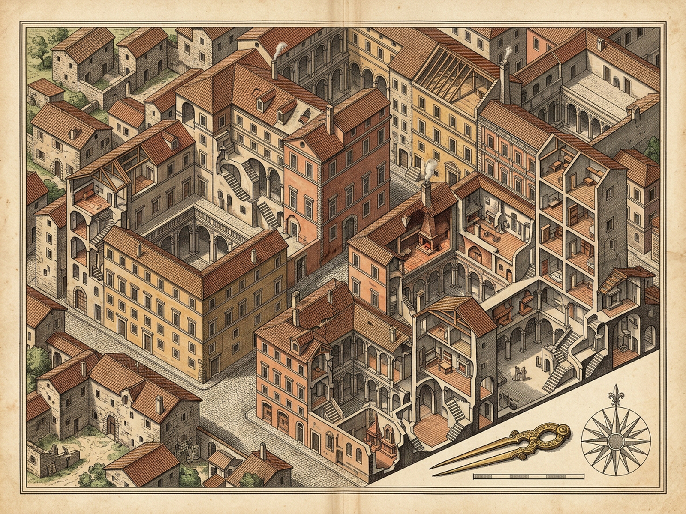
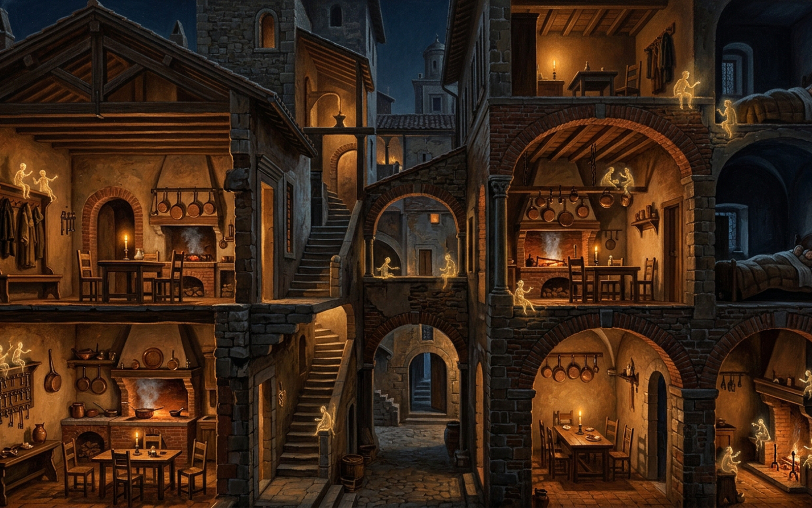

LEANDRA
Nocturnal Tenement Cutaway · Migrating Lineage Trunks & Hearth Flues
ESSENCE DISPUTED: PENATES ⇌ LARES
[F] Relocate
[W] Wave
[D] 50-Fam Block
[N] Night Quiet
[B] Banter
[M] Audio
[R] Reset
[P] Plates
PENATES · MIGRATING HOUSEHOLD GODS
30 Gods · Migrations: 0 · Memory Integrity: 100%
Trunk ▣
Coatrack Ψ
Umbrella Stand ⌆
Key-Ring ⚷
Slide wall-stethoscope over masonry or press [N] for Midnight Quietude to hear invisible Penates & Lares.
LARES · SITE HEARTHS & NIGHT DUET
Lares: 16 · Departures: 0 · Flue Gossip: 8
Daytime Clamor 0.00
0.22 · Clamor
Midnight Quiet 1.00
Critique of Present: 0
Dream of Future: 0
LEANDRA · ROYAL CUTAWAY & NOCTURNAL HEARTH PLATES
Diptych
Cutaway Survey Map
Nocturnal Hearth Plate
[Z] Loupe 1.75×
[Esc] Close

Cutaway Survey Map · Migrating Trunks & Site-Bound Foundations (1600×1200)

Nocturnal Hearth Plate · Copper Pots, Stove Flues & Key-Rings in Quietude (1600×1000)